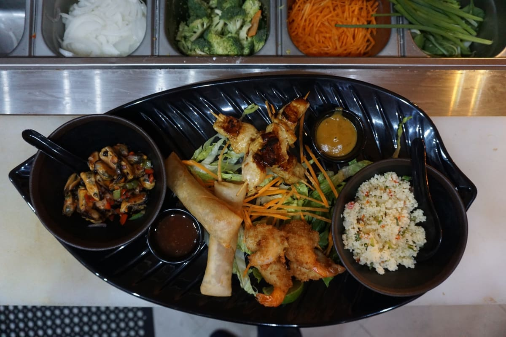
House signature
Aziana's Snack Platter
Shareable favorites for the table.
Fresh sushi, seafood, steaks, poke bowls and Chinese-Indonesian specialties served at Aziana in Bobby's Marina, Sint Maarten.
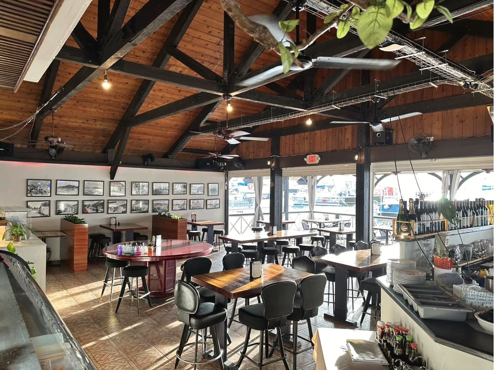
A wood-beamed dining room with the marina just beyond the windows, made for sushi lunches, family dinners, group meals and relaxed evenings.
Aziana is a strong choice before or after a trip, for visitors in Philipsburg, and for locals looking for sushi, seafood, steak and Asian fusion dishes near the marina.
Sushi cut to order, poke bowls, fresh seafood, grill favorites and Chinese-Indonesian dishes connected to a Philipsburg family restaurant legacy.

Shareable favorites for the table.
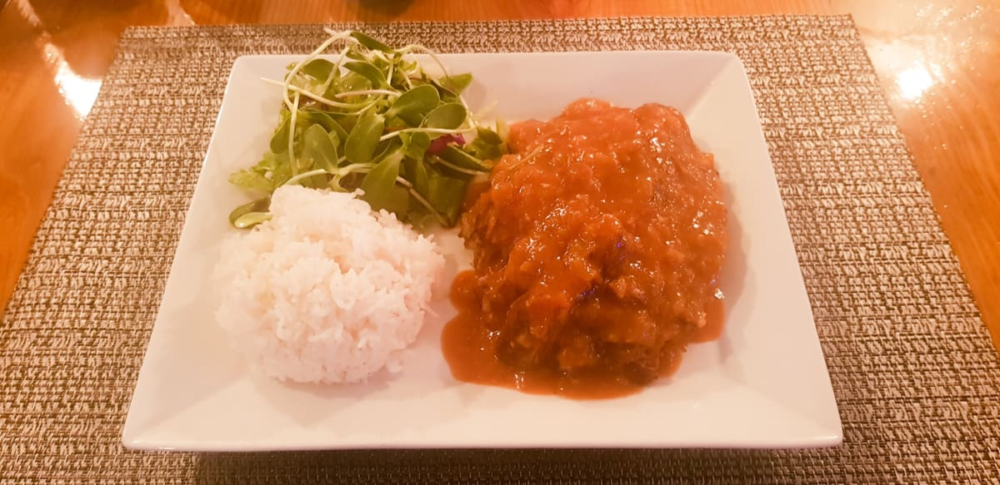
A Chinese-Indonesian classic.
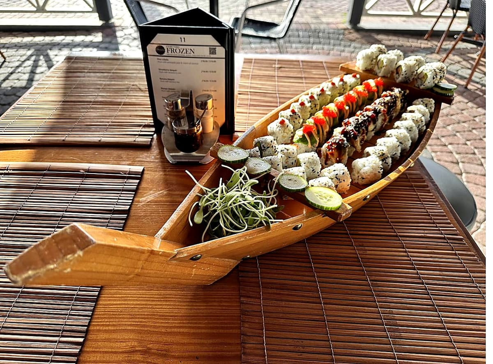
Tempura shrimp, avocado, spicy mayo and tobiko.
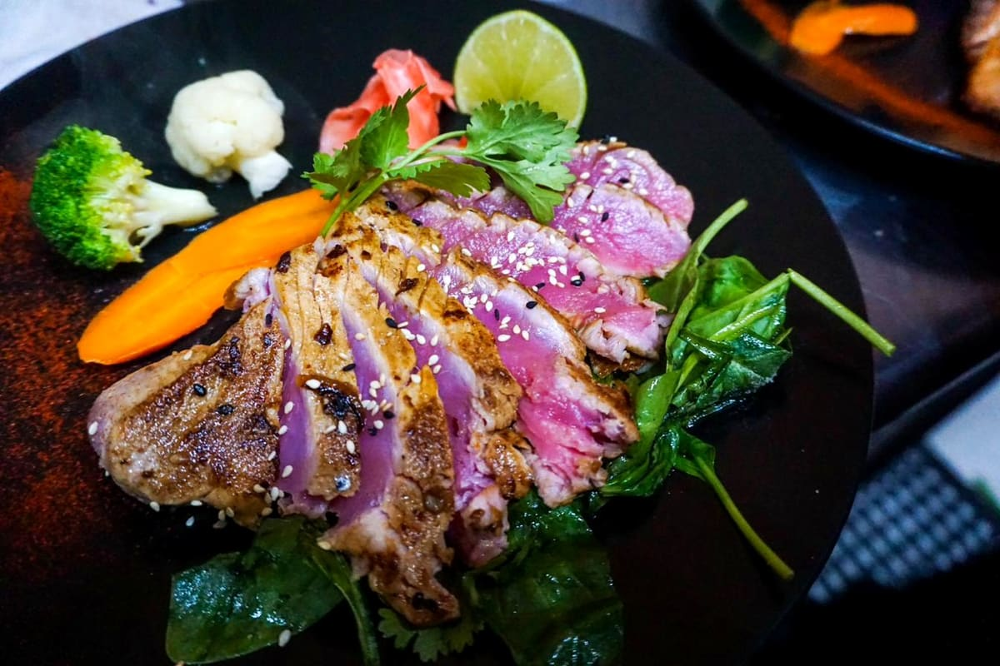
Sesame-coated and seared rare.
Fresh sushi-bar ingredients over rice with vegetables and sauces.
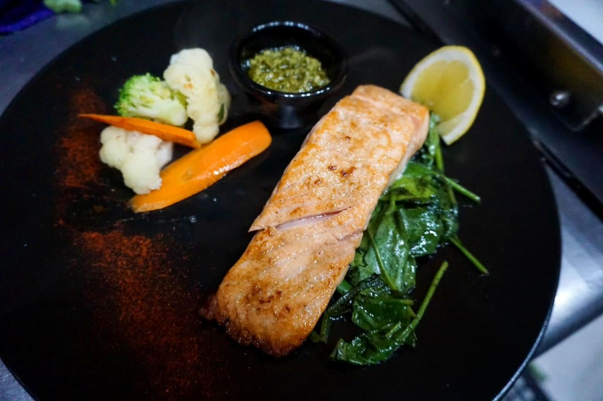
Seafood and grill flavors near the marina.
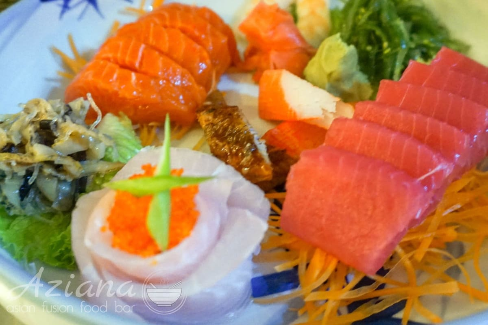
Built to share.
Colorful rolls, generous bowls, shareable plates and marina evenings.
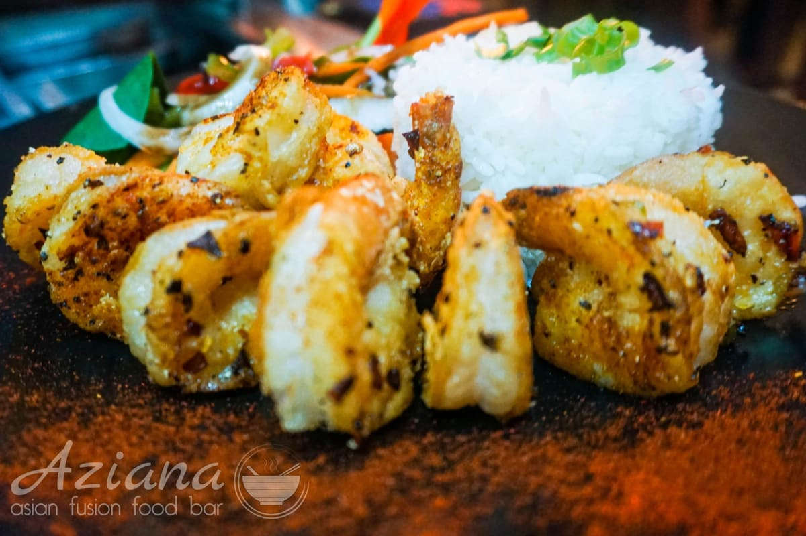

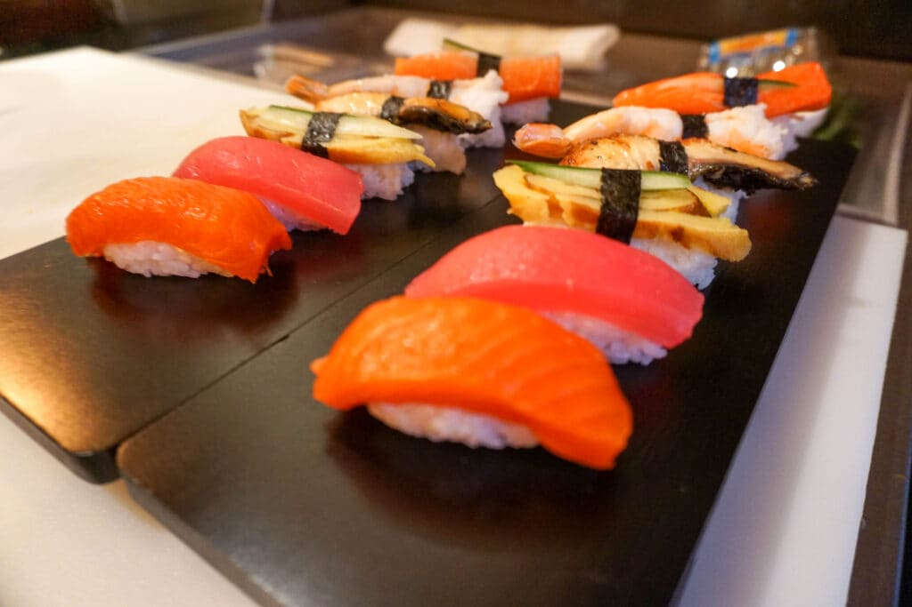
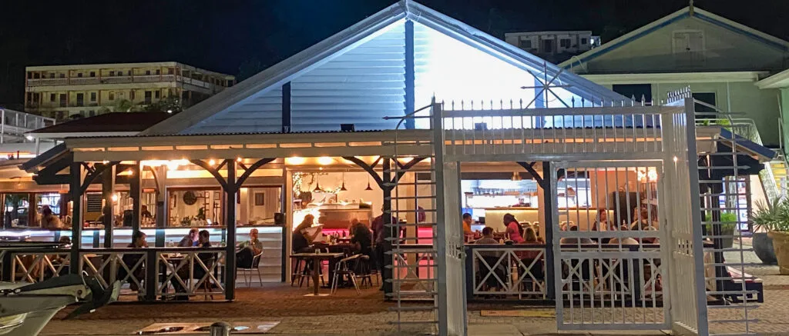
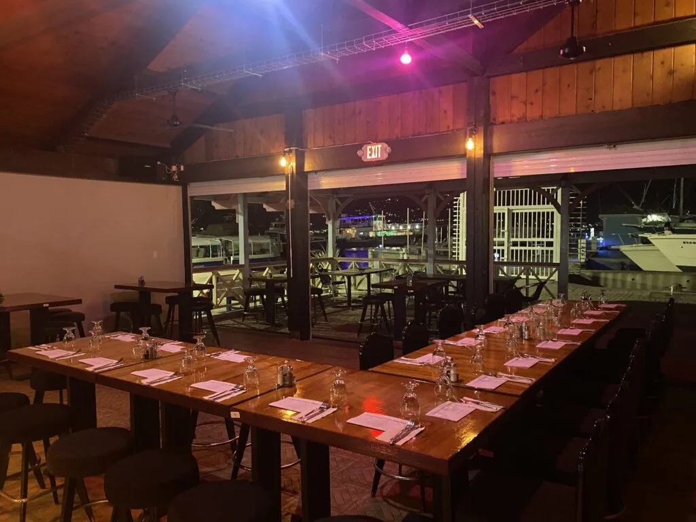
In 1995, Molly and Mario opened Old Captain in Great Bay, Philipsburg, and introduced sushi and Chinese-Indonesian cooking to an island that had seen neither.
The work continued through the restaurants that followed, and in 2018 it continued again at Bobby's Marina under the name Aziana.
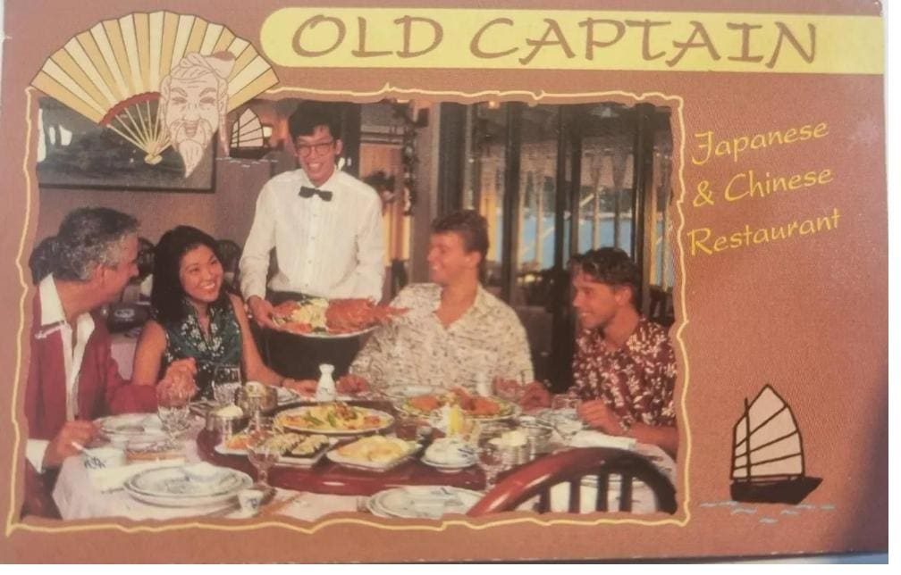
Birthdays, company dinners, group evenings and private gatherings at the table, on the porch or near the marina.
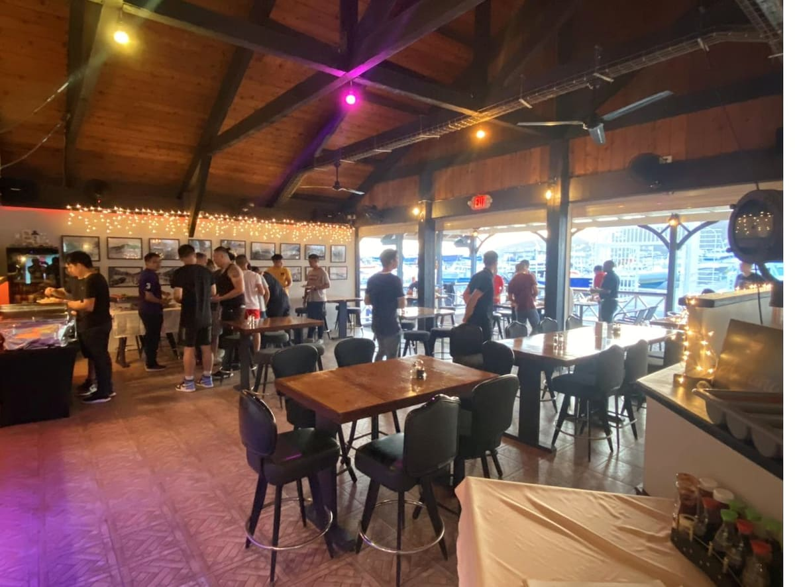
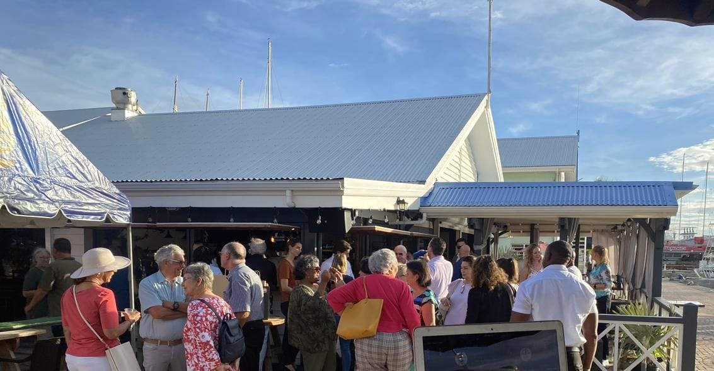
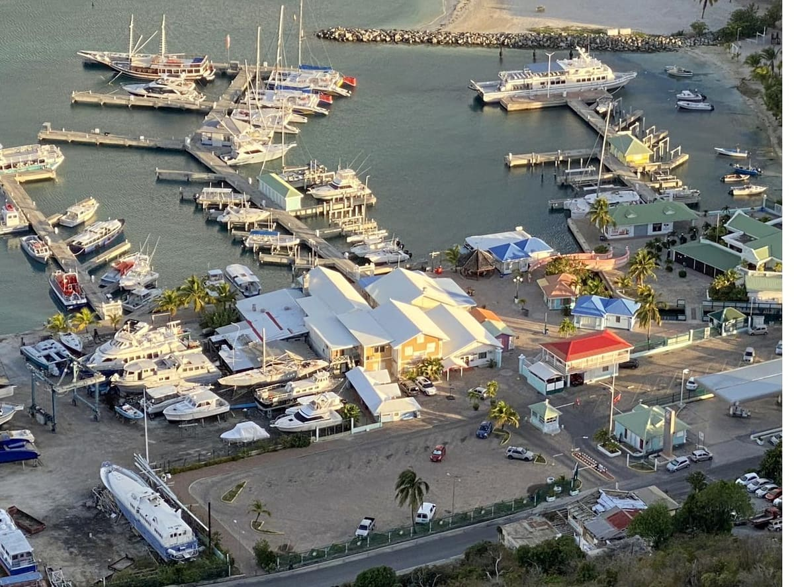
The bar may continue later. Contact Aziana for same-day questions.